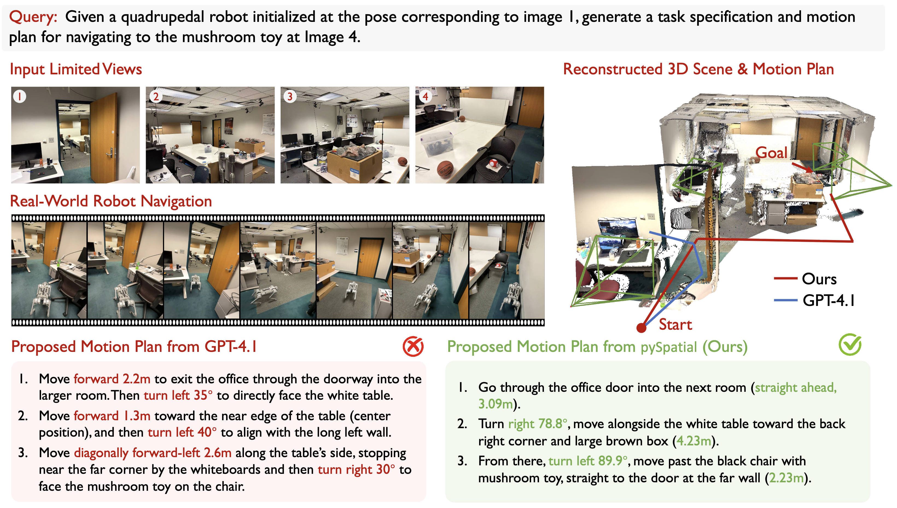
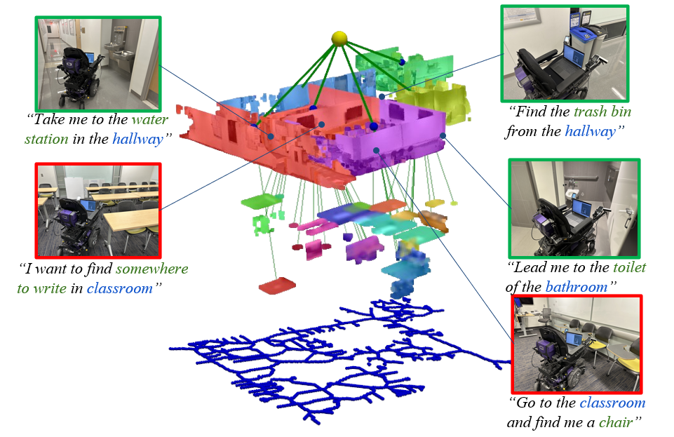
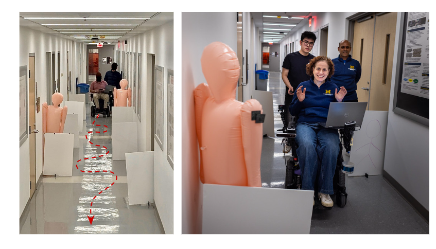
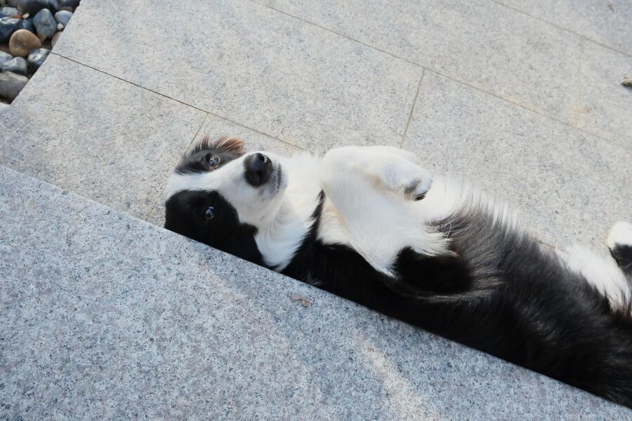
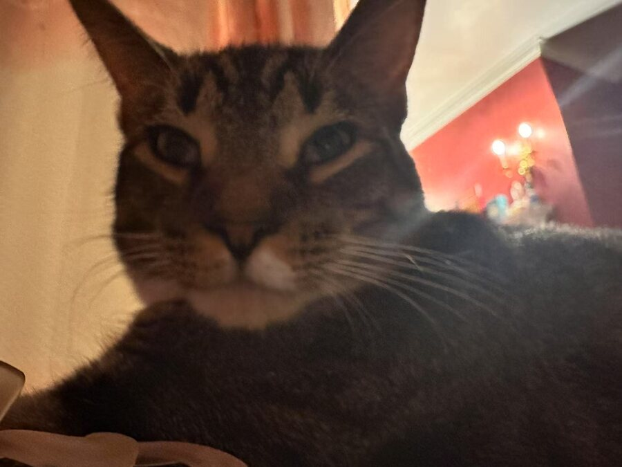

Qianwei Wang Robin · 王乾玮
I am a first-year Ph.D. student in Electrical & Computer Engineering at
Princeton University, advised by
Tom Silver in the
Princeton Robot Planning & Learning Lab (PRPL).
I am supported by the
Gordon Wu Fellowship.
Previously, I received my B.S. in Computer Science with Honors from the
University of Michigan, Ann Arbor.
Email
Scholar
GitHub
LinkedIn
X
CV

Unifying Deep Predicate Invention with Pre-trained Foundation Models
IEEE Transactions on Robotics, 2026 · * Equal contribution
UniPred learns concepts from human demonstrations with an agent in the loop, connecting perceptual learning to long-horizon robot planning.
Project • Paper • arXiv • Code
Coding Agents for Generalized Task and Motion Planning Problems
arXiv, 2026
Coding agents synthesize reusable policies for generalized task and motion planning across 28 simulated environments.
Project • Paper • Code

pySpatial: Generating 3D Visual Programs for Zero-Shot Spatial Reasoning
ICLR, 2026 · * Equal contribution
Zero-shot spatial reasoning through agent-generated Python programs and 3D visual tools.
Project • Paper • Code

Point2Graph: An End-to-end Point Cloud-based 3D Open-Vocabulary Scene Graph for Robot Navigation
ICRA, 2025 · * Equal contribution
Open-vocabulary 3D scene graphs built directly from point clouds for robot navigation.
Project • Paper • Code

CoNav Chair: Development and Evaluation of a Shared Control-based Wheelchair for the Built Environment
IEEE Transactions on Human-Machine Systems · Under review, 2025
A shared-control wheelchair that combines user input with autonomous assistance for navigation in built environments.
Paper
Always happy to talk research, exchange ideas, or help where I can. Get in touch

